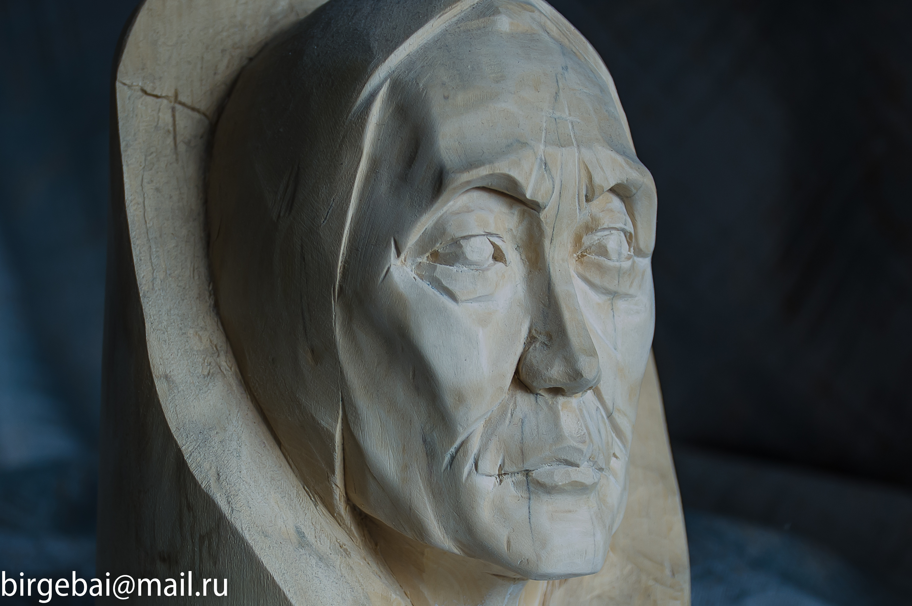
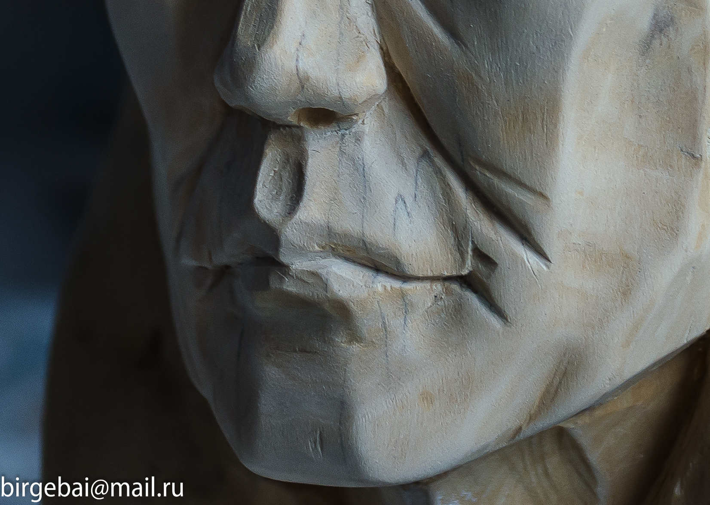
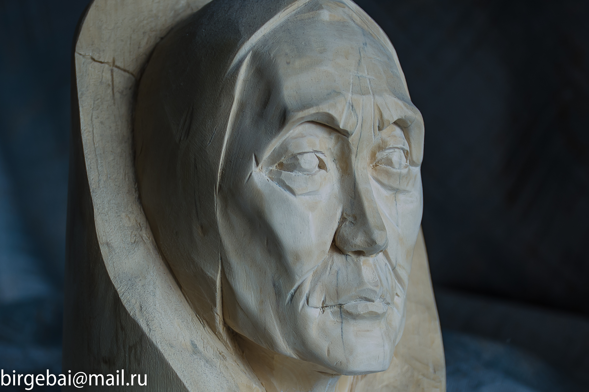
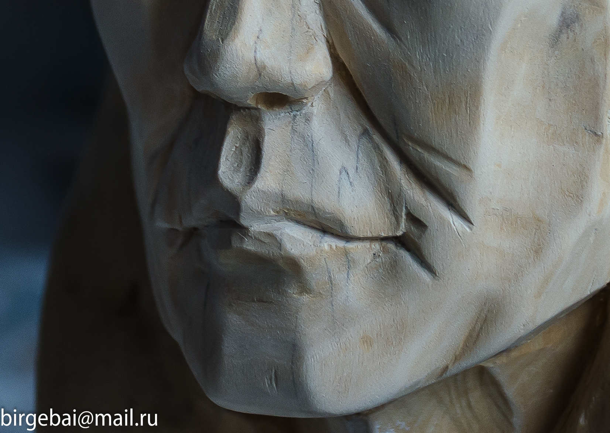

Mother
Sculpture
Concept
"Mother" is a wooden sculpture that captures the quiet
strength and nurturing presence of motherhood. The form
emerges from the natural grain of the wood, merging human
features with the organic structure of the material. It
reflects themes of care, resilience, and timeless warmth.
Processes & Tools
Hand-carved from a single block of wood using traditional
chiseling techniques. The piece was shaped manually over
several stages, allowing the natural imperfections and texture
of the wood to guide the process. Fine sanding and oil-based
finishing were applied to preserve detail and enrich the tone.
Technical Details
Material: Oak wood
Height: 42 cm
Tools: Chisels, rasps, sandpaper
Finish: Natural oil, matte
Year: 2024
Height: 42 cm
Tools: Chisels, rasps, sandpaper
Finish: Natural oil, matte
Year: 2024
 


